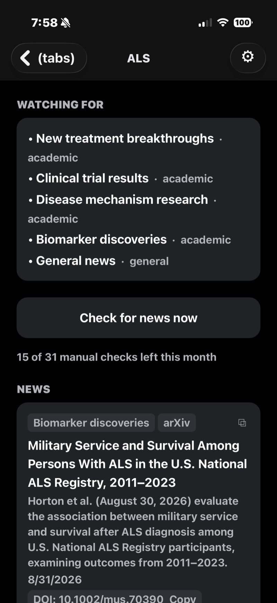
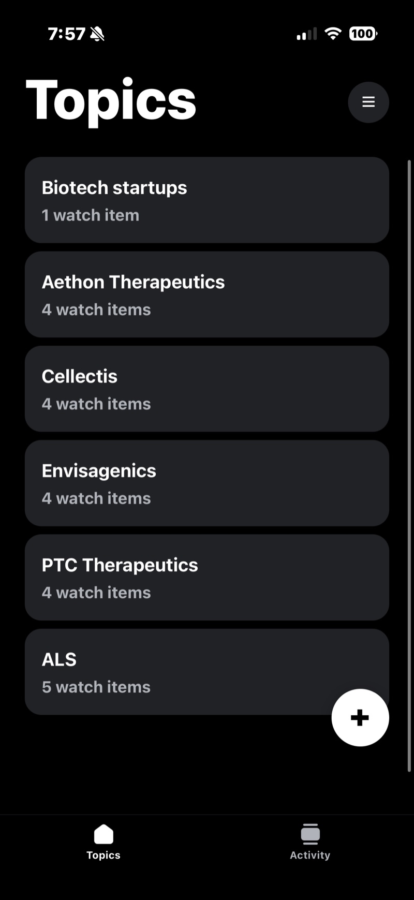
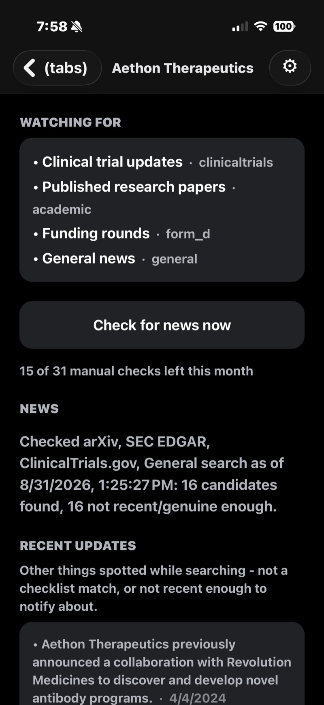
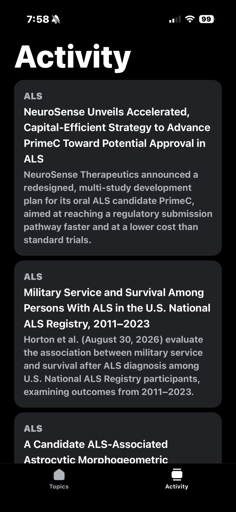
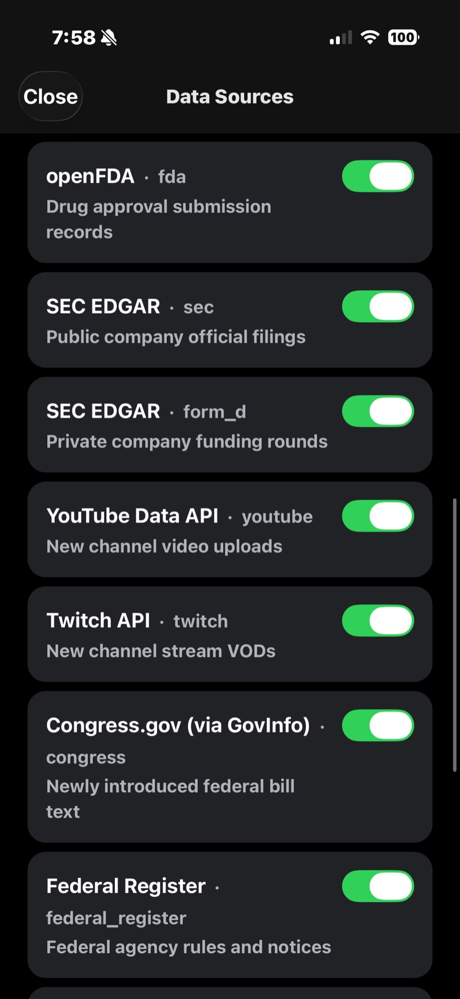
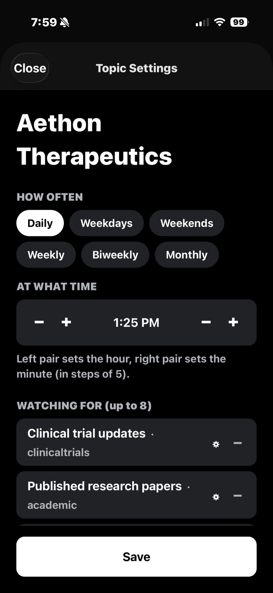

Most alerts keyword-match articles about a thing. Notified queries the records themselves — journal registries, trial databases, court dockets, federal filings — and pings you only when something genuinely matches what you said you were watching for.

A press release about a clinical trial is not the trial. Notified reads ClinicalTrials.gov, CrossRef, SEC EDGAR and the Federal Register directly, then checks the date against independent evidence before it interrupts you.
Each thing you watch for is routed to the database that actually holds it, rather than to a general web search hoping to catch a mention.
Three steps, and only the last one interrupts you.
A company, a drug, a person, a species, a bill. Anything you’d otherwise check by hand.
Notified drafts what would count as news — trial updates, funding rounds, new papers — and routes each to the right database. Edit or add your own.
It checks on your schedule. Nothing genuine, no notification — and you can still see exactly what it looked at.
Real screens from a set of biotech and research topics tracked across a dozen databases.

Each topic carries its own watch list. Anything with unread news moves to the top on its own.

“Nothing found” is a claim. So it names the databases it checked, when, and how many candidates it ruled out.

Activity collects matches across everything you track, newest first, without opening each topic.
Sources and cadence are settings, not assumptions baked into the app.

Turn any source off and it stops being queried everywhere, for every topic — no search, and no entry in the log.

Set how often it checks and at what hour. The gear on each item re-routes it to a different database, or to none.
A model will confidently date a story to today. Notified weighs several independent signals — the URL path, the page’s own metadata, an independent crawl — and scores how sure it is before anything qualifies as news.
Papers carry their DOI, trials their NCT number, cases their docket, filings their document number. Tap to copy a link that resolves straight to the record.
https://doi.org/10.1002/mus.70390Trial registries require periodic re-confirmation even when nothing changed. Notified walks the version history and reports only substantive revisions.
Literature search is unforgiving about wording. A topic named “Brazil nut tree” is also searched under its binomial name, so a paper filed only that way still reaches you.
Brazil nut tree → Bertholletia excelsaEvery tier checks the same sources. What changes is how much you can track and how often you can force a check yourself.